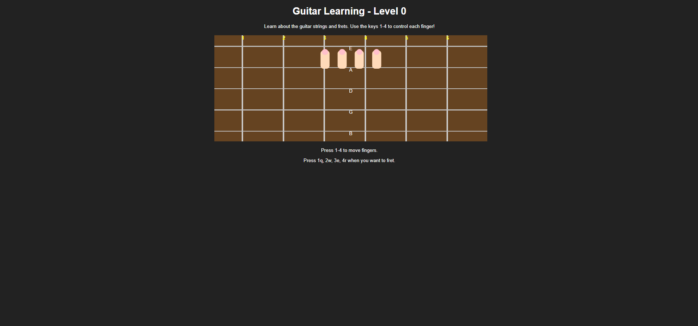
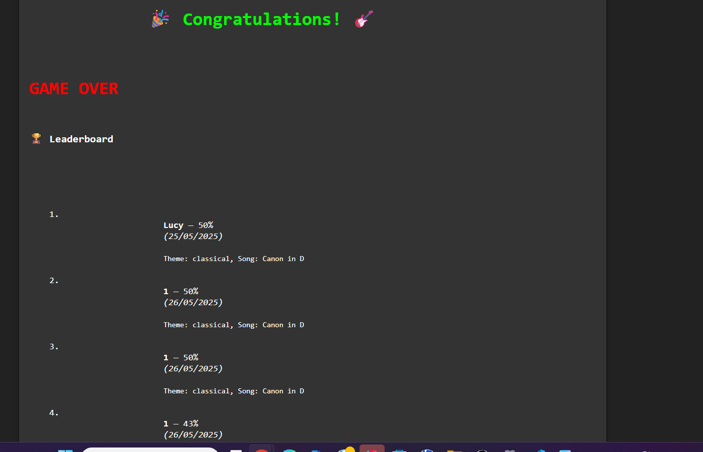
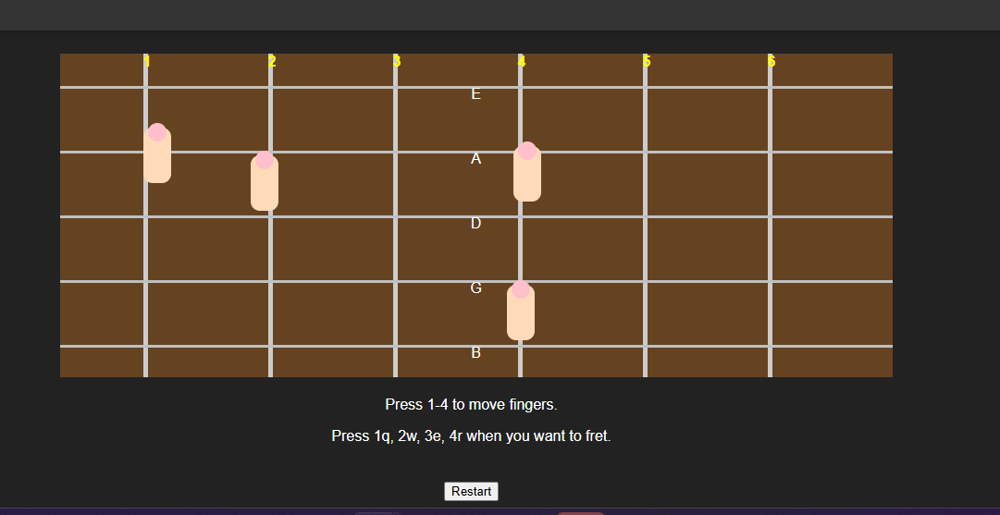

About the Project
Guitar Learning Game is a browser‑based rhythm game designed to help beginners practise musical notes, timing, and chord positions. Players follow coloured notes on a scrolling grid, press the correct keys, and receive instant feedback such as Perfect, Good, or Miss.
The game includes a digital fretboard, a scoring system, a game‑over screen, and keyboard‑based controls for fretting and finger movement. The neon aesthetic is inspired by arcade rhythm games.
Screenshots



How to Play
- Watch the scrolling notes and press the matching keys
- Hit notes in time to score Perfect, Good, or Miss
- Use keyboard controls to fret chords and move fingers
- Reach the end of the song to see your final score
- Try to beat your high score and improve accuracy
Game HUD
Note Grid
Scrolling coloured notes that the player must hit
Fretboard
Shows finger positions and chord shapes
Score System
Perfect / Good / Miss feedback in real time
Development Challenges
Timing & Accuracy Detection
Building a precise timing system required syncing note positions with the game loop and calculating hit windows for Perfect, Good, and Miss.
Neon Rhythm Aesthetic
Creating a clean neon look involved experimenting with bright colours, glow effects, and a dark UI that matched the arcade rhythm‑game style.
Keyboard‑Based Controls
Mapping fretting and finger movement to keyboard keys required careful input handling to ensure responsiveness and accuracy.
What I Learned
This project strengthened my JavaScript skills, especially in real‑time game loops, input handling, and UI feedback systems. I also learned how to design a consistent neon visual identity that enhances gameplay clarity.